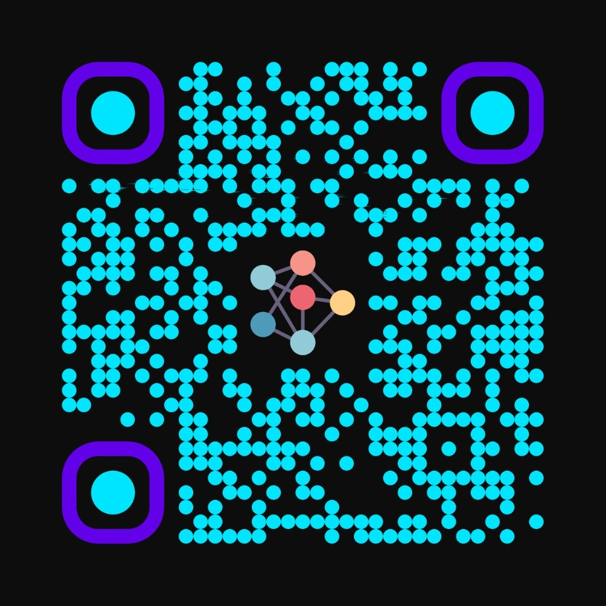
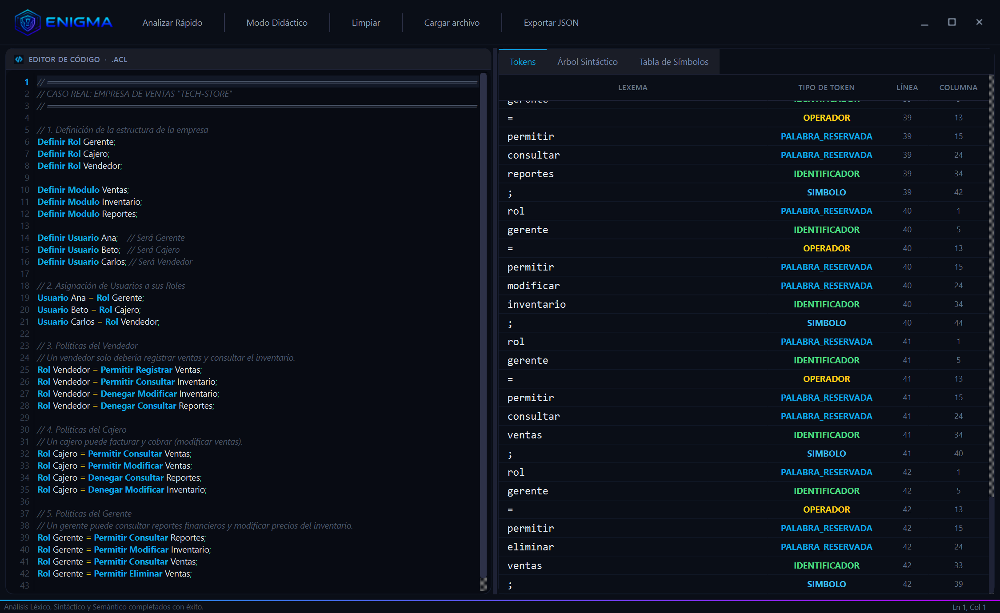
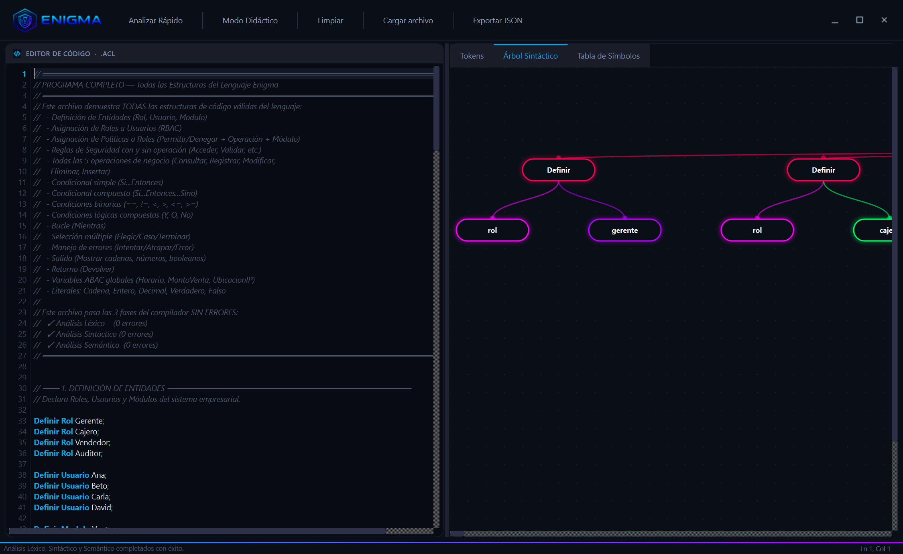
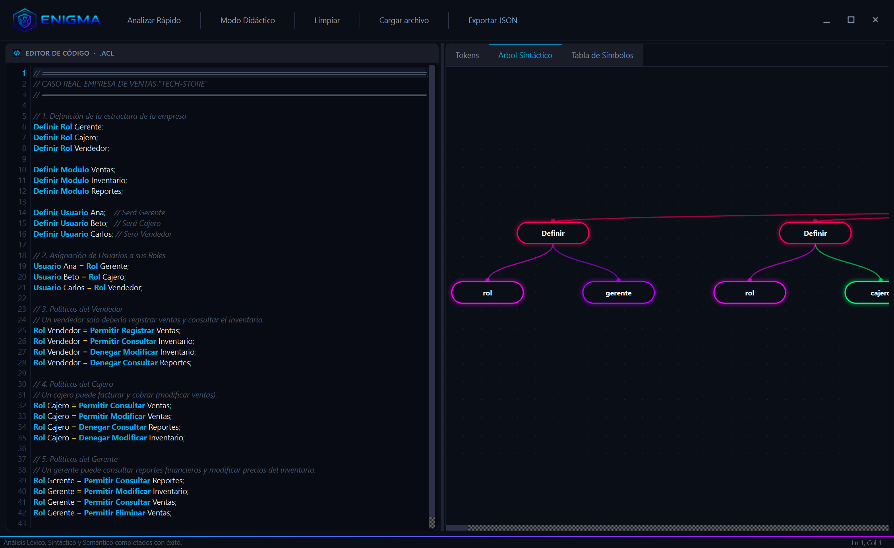
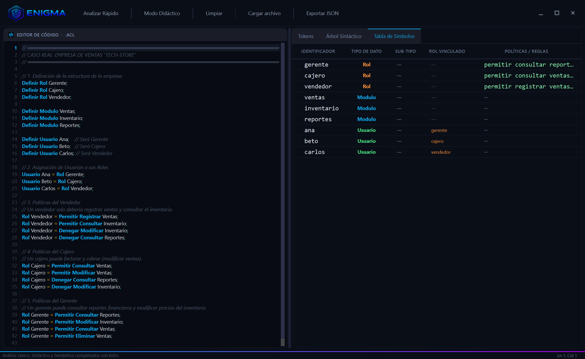
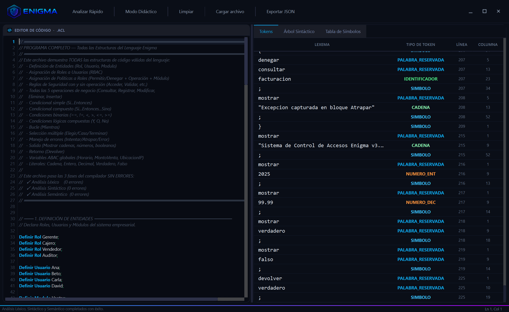
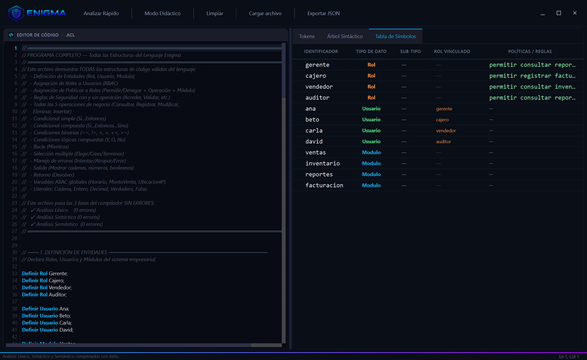

Escanea para conocer más.
Accede a la documentación completa, el código fuente y la página web del proyecto.

El lenguaje que protege
tu empresa.
Convertimos las reglas de seguridad de tu negocio en código auditable, en español, listo para producción.
ENIGMA es un compilador completo —léxico, sintáctico, semántico y generación de código— que transforma un archivo de texto en políticas RBAC/ABAC desplegables en cualquier ERP.
2026 Universidad
Rafael Landívar Compiladores
Decidir quién accede a qué
cuesta más de lo que parece.
En toda empresa, las políticas de acceso viven dispersas en hojas de cálculo, JSON sueltos y código duro del ERP. Una sola línea mal escrita puede dejar las ventas a la vista del becario o cerrar el sistema al gerente regional.
Reglas dispersas
Las políticas RBAC/ABAC se duplican en cada microservicio. Un cambio implica modificar N archivos a mano — y rezar para no romper nada.
Errores silenciosos
Un rol mal escrito, una política duplicada o un permiso contradictorio se descubren después del incidente de seguridad, no antes.
Sin lenguaje de negocio
El área de Seguridad necesita revisar las reglas antes de pasar a producción. Pero las reglas viven en código que solo entienden los desarrolladores.
El 80% de las brechas de seguridad empresariales empiezan en un permiso mal configurado, no en un ataque sofisticado.
Presentamos ENIGMA.
Un compilador que lee un archivo en español, valida que las reglas tengan sentido para tu negocio y entrega un JSON listo para ser consumido por cualquier ERP o motor de autorización (Keycloak, OPA, microservicios propios).
Lee tu negocio en español
Roles, Usuarios, Módulos, Permisos. Sin curva de aprendizaje técnica.
Entiende tu intención
Construye un árbol semántico de la estructura completa de seguridad.
Valida antes de producción
7 reglas de negocio que evitan permisos duplicados, contradicciones e inconsistencias.
Despliega en cualquier sistema
Exporta un JSON que cualquier ERP, OPA o Keycloak puede consumir directo.
// Una sola fuente de verdad, // en el idioma de tu negocio. Definir Rol Gerente; Definir Usuario Ana; Definir Modulo Ventas; Usuario Ana = Rol Gerente; Si Horario < 18 Entonces { Permitir Consultar Reportes; } Sino { Denegar Consultar Reportes; }
Cuatro fases. Un solo archivo.
Del texto crudo a un sistema de seguridad desplegable. Todo automatizado en un solo pipeline.
Lee
Convierte el texto en tokens clasificados.
Comprende
Arma el árbol semántico de tu intención.
Valida
Aplica 7 reglas de coherencia de negocio.
Compila
Genera la tabla de símbolos final.
Despliega
Exporta JSON listo para producción.
Lee tu negocio palabra por palabra.
El motor léxico recorre el archivo y clasifica cada palabra: palabras reservadas en español, identificadores, números, cadenas y operadores. Detecta seis tipos de errores sin detenerse — los reporta todos en una sola pasada.

Seis errores que nunca dejarán pasar
Sugerencias inteligentes
Si tu equipo escribe Defini, el compilador propone Definir automáticamente, gracias a la distancia de Levenshtein. Cero tiempo perdido buscando el typo.
Comprende la estructura de tu negocio.
El parser construye el Árbol de Sintaxis Abstracta, un mapa completo y navegable de toda la lógica de seguridad escrita en tu archivo. Maneja condicionales, bucles, selección múltiple y manejo de errores como cualquier lenguaje moderno.
🛡 Modo Pánico
Si tu archivo tiene errores, el parser no colapsa. Se sincroniza sobre los delimitadores ; y } y sigue analizando, reportando múltiples errores en una sola pasada. Tu equipo arregla todo de una vez.
🌲 14 estructuras del lenguaje
Definiciones, asignaciones, condicionales (con Y / O / No), bucles, selección múltiple, manejo de errores, salida y retorno. Toda la expresividad de un lenguaje moderno.

Valida antes de pasar a producción.
Siete reglas de coherencia se aplican al árbol antes de que nada llegue a producción. Detectamos lo que un revisor humano nunca podría detectar a tiempo: duplicados, contradicciones y referencias huérfanas.
Unicidad
Sin entidades duplicadas. Cada Rol, Usuario y Módulo es único.
Integridad referencial
Toda referencia apunta a algo declarado. Cero permisos "fantasma".
Compatibilidad
Usuario solo asigna a Rol. No se mezclan dominios.
Coherencia RBAC
Las políticas se asignan únicamente a Roles válidos.
Expresiones booleanas
Las condiciones siempre evalúan a Verdadero o Falso.
Operaciones de tipos
Solo se comparan valores compatibles entre sí.
Conflicto de políticas
Sin contradecir. No se puede Permitir y Denegar la misma acción.
Tabla de Símbolos viva
Roles, Usuarios, Módulos y variables ABAC globales (Horario, MontoVenta, UbicacionIP) en una sola vista auditable.
Despliega en cualquier ERP.
Una vez aprobadas las reglas, el compilador genera un JSON estandarizado que cualquier ERP, motor de autorización o microservicio puede consumir directamente. Sin transformaciones intermedias. Sin scripts a medida.
Compatible con estándares
El JSON sigue convenciones RBAC + ABAC universales. Plug-and-play con OPA, Keycloak o tu motor propio.
Versionable en Git
Las políticas se vuelven parte del repositorio. Auditas cambios como auditas código.
Cero deuda técnica
Un archivo, una verdad. Sin reglas duplicadas entre frontend, backend y base de datos.
{
"roles": [
{ "nombre": "Gerente",
"politicas": [
{ "accion": "Permitir",
"operacion": "Consultar",
"modulo": "Reportes" }
]
}
],
"usuarios": [
{ "nombre": "Ana",
"rol": "Gerente" }
],
"abac": {
"Horario": { "tipo": "Tiempo" },
"MontoVenta": { "tipo": "Entero" }
}
}
Un pipeline orquestado, tres equipos felices.
Construido alrededor de un único punto de orquestación —el Controller—
que conecta las cuatro fases mediante contratos inmutables. Esto permitió a tres desarrolladores trabajar en paralelo
sin conflictos de integración.
Live Compile
Compilación silenciosa mientras escribes, con debounce inteligente de 350 ms. Cero congelamientos, errores visibles al instante.
Modo Didáctico
Animación paso a paso de las tres fases. Ideal para que tu equipo entienda por qué una política fue rechazada.
Contratos inmutables
Token, AST y Tabla de Símbolos como dataclasses inmutables. Cero estado compartido, cero bugs por concurrencia.
El Controller es el único punto de entrada al pipeline. Ningún módulo puede saltarse las validaciones.
Arquitectura blindadaVer para creer.
Las pruebas se realizan en vivo.
Vamos a cambiar de pestaña para demostrarlo.
Tech-Store · de hoja de cálculo a producción.
Una tienda de tecnología con tres roles (Gerente, Cajero, Vendedor) y tres módulos (Ventas, Inventario, Reportes). Antes de ENIGMA: 17 reglas dispersas en cinco archivos. Después: un solo archivo de 42 líneas.
// 1 · Estructura de la empresa Definir Rol Gerente; Definir Rol Cajero; Definir Rol Vendedor; // 2 · Asignación de roles Usuario Ana = Rol Gerente; Usuario Beto = Rol Cajero; Usuario Carlos = Rol Vendedor; // 3 · Políticas RBAC Rol Vendedor = Permitir Registrar Ventas; Rol Cajero = Permitir Modificar Ventas; Rol Gerente = Permitir Consultar Reportes;
Resultados medibles
Menos código de seguridad
De 5 archivos en 3 lenguajes distintos, a un archivo en español.
Auditabilidad
El área de Seguridad ahora aprueba las reglas antes de que lleguen a producción.
Permisos en conflicto
El analizador semántico bloquea cualquier contradicción antes del despliegue.
Ver es creer.
Capturas reales del compilador procesando los dos archivos clave del proyecto: empresa_ventas.acl (Tech-Store) y programa_completo.acl (todas las estructuras del lenguaje). Click sobre cualquier imagen para verla en grande.




Próxima diapositiva: ejecución en vivo del compilador y propuesta de cierre.
Live demo¿Por qué ENIGMA?
No es solo otro motor de políticas. Es la única solución que combina lenguaje de negocio, validación semántica y exportación universal en un solo flujo.
| ENIGMA | Reglas en código duro | Hojas de cálculo | |
|---|---|---|---|
| Lenguaje legible por el área de Seguridad | ✓ Español natural | ✗ Solo developers | ~ Ambiguo |
| Validación antes de producción | ✓ 7 reglas semánticas | ✗ Bugs en runtime | ✗ Cero |
| Detección de contradicciones | ✓ Automática | ✗ Manual | ✗ Imposible |
| Salida estándar para ERPs | ✓ JSON universal | ~ Específica | ✗ N/A |
| Versionable en Git | ✓ Single file | ~ Disperso | ✗ Binario |
| Auditoría de cambios | ✓ Trazable | ~ Si hay disciplina | ✗ Sin historial |
El verdadero valor de ENIGMA no está en el compilador. Está en que el área de Seguridad y el área de Desarrollo finalmente hablan el mismo idioma.
Hagamos que las reglas se cumplan.
ENIGMA está listo para producción. Open source, documentado y probado. El siguiente paso es desplegarlo en tu organización.
4 fases completas
Léxico, sintáctico, semántico y generación de código — el ciclo completo de un compilador moderno.
60+ pruebas automatizadas
Red de seguridad continua que protege contra regresiones cada vez que la gramática evoluciona.
GUI funcional + pedagógica
Live Compile, Error Lens y Modo Didáctico. Una herramienta para producción y para enseñar.
Listo para integrarse
JSON estandarizado, compatible con OPA, Keycloak y ERPs propios. Cero acoplamiento.
Cómo correrlo
# 1) Instala dependencias pip install -r requirements.txt # 2) Inicia la GUI python main.py # 3) Ejecuta la suite de pruebas python -m pytest test/test_case.py -v
¿Preguntas?
Q & A